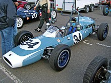
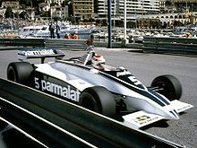
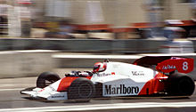

Fórmula 1 é a mais popular modalidade de automobilismo do mundo. É a categoria mais avançada do esporte a motor e é regulamentada pela Federação Internacional de Automobilismo. O "Campeonato Mundial de Pilotos", que se tornou o Campeonato Mundial de Fórmula 1 da FIA em 1981, tem sido uma das principais categorias de corrida em todo o mundo desde sua temporada inaugural em 1950. A palavra "fórmula" no nome se refere ao conjunto de regras às quais todos os carros dos participantes devem estar em conformidade. Uma temporada de Fórmula 1 consiste em uma série de corridas, conhecidas como Grandes Prêmios, que acontecem em todo o mundo em circuitos construídos para esse fim e em vias públicas fechadas.
Ao contrário do que muitos acreditam, o registro oficial da categoria consta como Fórmula Um (Campeonato Mundial de Fórmula Um), com o numeral escrito por extenso, mas também se aceita o uso do 1 e do I (em romano).
Em Setembro de 2016, a categoria foi adquirida pelo grupo norte-americano Liberty Media Corporation em um acordo avaliado em US$ 8 bilhões, entre investimentos e assunção de dívidas, realizado em duas etapas: a compra da holding Delta Topco e a aquisição de ações da CVC Capital Partners.
A história da Fórmula 1 tem início com as competições de Grandes Prêmios disputadas na Europa, no início do século XX (20), apenas com uma pausa de 1939 até 9 de setembro de 1945, no Circuito de Silverstone, prosseguindo até a atualidade, sem interrupções e com 72 pistas usadas.
Seguindo os dirigentes do automobilismo, a FIA (Federação Internacional de Automobilismo) anunciou a prova inaugural do campeonato mundial de F-1, em um sábado, 13 de maio de 1950 no Circuito de Silverstone, no Reino Unido, para não coincidir com um culto religioso local.
Seriam descartados os 3 piores resultados das 7 corridas disputadas. A pontuação era assim dividida: 8 pontos para o primeiro colocado; 6 para o segundo; 4 para o terceiro; 3 para o quarto; 2 para o quinto colocado e um ponto para o piloto que marcasse a volta mais rápida da prova.
A prova inaugural em Silverstone contou com um público de 100 000 pessoas estimadas, além da presença do Rei George VI, a das princesas Elizabeth (futura rainha) e Margareth. Esta também foi a única prova em que a Família Real Britânica esteve presente.
Após o domínio nos dois primeiros anos das Alfettas e das antigas voiturettes, a Ferrari apresenta um carro vencedor com motor de 4,5 litros e domina completamente os anos de 1952 e 1953, dando a Alberto Ascari o título de bicampeão. Neste momento, a Alfa, que competia ainda com as Alfettas (projeto do pré-guerra) não tinha recursos financeiros para investir no desenvolvimento de um novo projeto e decide abandonar a categoria.
Em 1954, a Mercedes-Benz retorna ao esporte com um carro perfeito que deu a Juan Manuel Fangio mais 2 títulos, tornando-se tricampeão mundial. Os carros são menores, com motores de 2,5 litros. Ao final de 1955, a Mercedes abandona as competições em razão da tragédia de Le Mans ocorrida naquele ano, quando mais de 80 espectadores morreram quando a Mercedes de Pierre Levegh projetou-se sobre a multidão. Neste momento, a Ferrari contrata Fangio, que conquista o quarto título na F-1. Em 1957, ele conquista seu quinto (e último) título pela Maserati.
Em 1955, a Vanwall, primeira equipe inglesa de F-1, apresenta um carro originalmente concebido para a Fórmula 2 de 2,0 litros, porém equipado com freios a disco e injeção de combustível. Em 1956, a Vanwall apresenta o motor de 2,5 litros e um novo chassi concebido por Colin Chapman, que nesta época desenvolvia carros esporte para a Lotus. Após algumas modificações introduzidas na suspensão por Chapman e a contratação de um especialista em carrocerias, Frank Costin, o carro da Vanwall tornou-se extremamente competitivo. Para brigar pelo campeonato foram contratados 2 excelentes pilotos: Stirling Moss e Tony Brooks. Assim, a Vanwall se tornou a primeira equipe campeã de construtores em 1958.
Em 1958, a Cooper apresenta um pequeno carro (baseado nos modelos da Fórmula 3 de 500 cc) com motor de fabricação própria, montado na parte traseira, com um acentuado índice de avanço técnico comparado aos carros da época. Este carro marcou os modelos da década que se iniciava já sendo campeão de construtores e de pilotos, com o australiano Jack Brabham, em 1959 e 1960 (Brabham futuramente criaria sua própria equipe de F1 e venceria um campeonato mundial com ela. Este feito inspirou também o neozelandês Bruce McLaren, que corria na F1 e que acabou criando a bem-sucedida equipe McLaren, onde correram grandes campeões, como Niki Lauda, Alain Prost e Ayrton Senna).
(Um carro da Alfa Romeo, usado na temporada de 1950)
As cores tradicionais dos carros no início da Fórmula 1 eram: o verde para as equipes inglesas, o vermelho para as italianas, o azul para as francesas e o branco para as alemãs, que mais tarde adotariam a cor prata e o branco seria dos americanos, que eram vermelhos, porém os italianos adotariam essa cor e o amarelo para as equipes belgas. A cor prata passou a ser a cor tradicional dos carros de corrida alemães. Neste caso, a história remonta a 1899, quando o empresário americano James Gordon Bennett Jr. anunciou uma corrida na França no ano seguinte envolvendo carros com pilotos de diversos países. Para diferenciar os países, cada carro seria pintado de uma cor diferente. O branco foi mantido pelos alemães até a década de 30, quando as empresas locais pararam de adotar a tinta para deixar os carros um pouco mais leves. Os carros em metal cru ganharam o apelido de Flechas Prateadas. Nascia ali a tradição de carros alemães prateados, hoje, determinados por um padrão internacional, e que só está sujeito a mudanças diante da interferência de patrocinadores. O vermelho, inicialmente adotado pelos americanos na Copa Gordon Bennett, passou para os italianos após uma corrida entre Pequim e Paris, datada de 1907, vencida por uma equipe italiana. Na ocasião, a dupla formada pelo príncipe Scipione Borghese e pelo co-piloto Ettore Guizzardi cruzou a linha de chegada em primeiro lugar com um carro Italiano pintado em vermelho. Como as cores da Copa Gordon Bennett não era obrigatórias (e até hoje, trata-se de uma convenção histórica), os italianos passaram a adotar o vermelho, que logo virou tradição. Embora seja comum ouvir a expressão “vermelho Ferrari”, a cor é adotada também por outras equipes italianas. Além das já citadas Maserati, Lancia e Alfa Romeo, times menores do país já chegaram à F1 vestindo o Rosso Corsa, como Scuderia Italia (conhecida como Dallara entre 1988 e 1993) e Life.
Nessa época, a F-1 era essencialmente um esporte e o mercantilismo ainda não tinha tomado conta. As equipes eram mantidas com ajuda das empresas de petróleo e fabricantes de pneus. Essa obrigação durou até 1968.
No ano de 1958, pela primeira vez a Fórmula 1 teve uma mulher piloto alinhando no grid. Foi a italiana Maria Teresa de Filippis.[7] Ela tentou se classificar para 5 grandes prêmios, quatro deles pela equipe Maserati e um pela Porsche. Classificou-se para três deles. Sua melhor atuação foi em sua segunda corrida, na Bélgica em 1958, quando largou na 15ª colocação e terminou na 10ª colocação.
Devemos, antes de tudo, ter cuidado ao analisar este período sem o romantismo que temos costume de enxergar estes anos, pois senão corre-se o risco de não dar o valor merecido a este importante momento da categoria. Nos anos 1960 ocorreram as mais profundas mudanças na Fórmula 1. Foi o grande momento para os entusiastas (também chamados na época de garagistas, com um tom de menosprezo pelas grandes fábricas). Consolidou-se o motor traseiro, a tecnologia de 4 válvulas por cilindro, Chapman iniciou uma nova era com o monocoque e a maior das descobertas: a aerodinâmica. Diferentes asas e spoilers apareceram a partir de 1967, mas, após 1968 é que aconteceu uma revolução neste campo.
A década começou com motores gerando 160 hp e terminou com carros equipados com o motor Cosworth DFV chegando a desenvolver 450 hp, o que determinou um avanço no desenvolvimento dos pneus que se tornavam cada vez mais largos, mas ainda providos de sulcos. Mas os pilotos já percebiam que com o desgaste nem sempre se perdia em aderência, e já no início de 1970 os primeiros pneus slick apareceram.
No campo da propaganda, esta época foi decisiva para o futuro das competições na Fórmula 1 como conhecemos hoje. A Lotus se juntou a uma empresa de tabaco em 1968, e criou a equipe Gold Leaf Lotus, com carros pintados de vermelho, branco e dourado, o que fez desaparecer o tradicional verde britânico. As competições se transformaram num meio comercial.
Mas os anos 1960 também trouxeram muitas mortes nas pistas. Jackie Stewart passou a exigir mais segurança na Fórmula 1. Tudo começou num gravíssimo acidente que ele sofreu em 1966 na pista belga de Spa-Francorchamps. Uma tempestade atingiu o circuito, e deixou seco somente o grid de largada. Na rápida Masta Straight, a BRM de Stewart girou e caiu em uma vala, e ele ficou preso no carro com o macacão encharcado de gasolina, enquanto Graham Hill e Bob Bondurant tentavam desparafusar o volante para poderem retirar Stewart de dentro do monocoque avariado. A partir daí, disse que não correria na equipe se não tivesse segurança no carro. Foi ele que idealizou o capacete que cobre toda a cabeça do piloto e do macacão antichamas. A partir daí, ele chegou a ser ridicularizado por aqueles que achavam que as competições deviam ser um esporte de riscos. Ficou, inclusive, conhecido como homem vacilante, mas se tornou campeão do mundo por 3 vezes.
1960 registrou a última vitória de um carro com o motor de 2,5 litros montado à frente do piloto na Fórmula 1, uma Ferrari pilotada por Phil Hill, na pista inclinada de Monza. A Cooper se tornou campeã de construtores e seu piloto, Jack Brabham, o campeão dos pilotos, assim como acontecera em 1959.
A partir de 1961, os dirigentes da Fórmula 1 optaram pelos motores de 1,5 litro, o que trouxe de volta o domínio dos carros vermelhos da Ferrari de nariz de tubarão. Phil Hill se tornou campeão de 1961 com cinco pontos de vantagem sobre Wolfgang von Trips, também da Ferrari, e se sagrou campeã entre os construtores. Entretanto, a conquista ferrarista foi ofuscada pela trágica morte de Von Trips depois de um choque acidental com o carro de Jim Clark, em plena pista de Monza. Von Trips liderava o campeonato, mas após sua morte o título foi para Phill Hill.
Em 1962, os ingleses reagiram e as equipes BRM (campeã de construtores e pilotos, com Graham Hill em 1962) e Lotus (campeã em 1963) passaram a dominar o circuito. Em 1964, a Ferrari retoma o título de construtores e pilotos com John Surtees (que já tinha 7 títulos de Motovelocidade nas 350 cc e 500 cc quando foi para a Fórmula 1). A Lotus venceu o campeonato de 1965, novamente com Jim Clark, tendo conquistado o título individual, como já havia ocorrido em 1963.
Em 1966, a Fórmula 1 passou a contar com motores de 3,0 litros, mas os motores de até 1,5 litro superpressurizados também eram permitidos (mas foi ignorado na época). Jack Brabham conquistou seu terceiro e último título de campeão de Fórmula 1, mas registrou um feito até os dias de hoje único: foi campeão de construtores e pilotos tendo fabricado o próprio carro. Em 1967, a Brabham vence o campeonato, mas desta vez o piloto neozelandês Denny Hulme supera "Old Jack" por 3 pontos e conquista o título.
Graham Hill venceu o campeonato de 1968, e a Lotus foi a campeã dos construtores, mas o ano ficou marcado pela morte de Jim Clark, no dia 7 de Abril, em uma prova de F-2 em Hockenheim. Após sua morte, Jackie Stewart iniciou a cruzada pela segurança no esporte.
1969 marcou a entrada na Fórmula 1 do potente motor Ford-Cosworth DFV, que exerceu domínio na F1 tendo sido usado até 1981 e tendo conquistado 10 títulos. Correndo pela equipe francesa Matra, Stewart conquista seu primeiro título, dando à Matra sua única conquista entre os construtores.
Não podemos analisar a década de 1970 na F1 sem falar de Bernie Ecclestone, Colin Chapman, o motor V8 Ford-Cosworth DFV e a equipe Renault.
No ano de 1971, Ecclestone comprou a equipe Brabham pela quantia de £ 100 mil. Em 1972 assumiu a direção de uma organização criada pelas equipes inglesas, a FOCA (Formula One Constructor´s Association), com o objetivo de negociar suas participações junto aos organizadores das competições. Os proprietários dos circuitos tinham até o final dos anos 1960 toda vantagem comercial nas negociações, chegando a controlar a receita das equipes e deter poder político dentro da CSI (Commision Sportif Internationale) — sub-comissão esportiva da FIA. Ecclestone unificou a Fórmula 1 e criou condições para a realização das competições que os proprietários de circuitos tiveram que aceitar, anulando o poder que estes detinham até então. Em 1979, Ecclestone foi o escolhido pela FIA para negociar e administrar os direitos de transmissão de TV.
No final da década de 1960, os fabricantes de carros concentravam seus investimentos em carros esportivos, mas com a introdução do motor Ford-Cosworth DFV em 1967, as equipes podiam concentrar atenção e verba no desenvolvimento de chassis; O DFV estava disponível a qualquer equipe pelo custo de £ 7 500 por unidade. Em 1974 as únicas equipes que não o utilizavam eram a Ferrari e a BRM. O crescente aumento de audiência na TV criou um atrativo para patrocinadores, inicialmente os que não faziam parte da indústria automobilística, como o segmento tabagista. Não tardou para os fabricantes de carros voltarem a participar da F1.
Em 1977, a Renault retornou às corridas de Grande Prêmio (após ter se retirado em 1906), com o projeto de fazer do motor turbo um vencedor na Fórmula 1, que já era desenvolvido em corridas de carros esporte e endurance, como Le Mans. O V6 Turbo francês, que produzia mais de 1 000 HP, preocupava as equipes que utilizavam (sem outra alternativa) o Cosworth DFV e quando em 1978, Colin Chapman descobriu o efeito-solo (compensar a falta de potência prendendo o carro ao solo), deu uma sobrevida de mais 6 anos ao DFV. A Renault obteve seu primeiro triunfo em julho de 1979, com a vitória de Jean-Pierre Jabouille no GP da França, marcado pelo antológico duelo entre René Arnoux e Gilles Villeneuve.
Os anos 1970 também revolucionaram a fabricação dos pneus. Em 1971, foram adotados os pneus slick (sem sulcos), que alguns pilotos ainda achavam que seriam escorregadios, e quando do retorno da Renault em 1977, a Michelin foi sua parceira no fornecimento de pneus, utilizando, pela primeira vez na Fórmula 1, os pneus Radiais. O sucesso foi imediato. Já em 1978, a Ferrari trocou a Goodyear (com tradicionais pneus de lonas diagonais) pelos radiais da Michelin.
No que tange à competição na pista, a década começou com um acontecimento curioso, ligado a um fato triste: o campeão da temporada de 1970 foi o austríaco Jochen Rindt, que é até hoje o único campeão póstumo da categoria. Apesar de ter iniciado sua carreira na Fórmula 1 em 1964, somente em 1969 teve um carro a altura de seu talento, quando veio a primeira vitória. Na temporada de 1970, foram 5 vitórias quando em uma sessão de treinos em Monza, entrou forte na Parabólica e perdeu o controle da Lotus, o que causou sua morte instantânea. Rindt tinha 45 pontos nesta altura da temporada, e com o resultado da prova de Monza Clay Regazzoni (31 pontos), Jack Brabham (25 pontos), Stewart (25 pontos), Hulme (23 pontos) e Jacky Ickx (19 pontos) entraram na briga pelo título com três provas a disputar e 18 pontos em jogo. Na prova seguinte, no Canadá, Brabham, Stewart e Hulme abandonaram e se despediram da disputa do título. A próxima corrida seria disputada em Watkins Glen e Ickx, que havia vencido no Canadá, precisava de vencer esta e a última corrida, no México, e Regazzoni, 2°colocado no Canadá, precisava de 1 vitória e um segundo lugar, mas Ickx chegou em 4º, Regazzoni não marcou nenhum ponto e desta forma a temporada estava decidida. Com uma vitória no México, Ickx tornou-se o vice-campeão e Regazzoni, que chegou em 2º na última prova, ficou com a terceira colocação no campeonato. Vale aqui o registro que o GP da Grã-Bretanha, o sétimo de um total de treze, marcou a estreia daquele que abriu as portas para os pilotos brasileiros na Europa: Emerson Fittipaldi, que na sua temporada de estreia já venceu sua primeira corrida, o G.P. dos Estados Unidos, em Watkins Glen.
A temporada de 1971 foi inteiramente dominada por Jackie Stewart, que viria a se tornar o maior piloto daquela década — mesmo com a estreia de Niki Lauda, guiando um Tyrrell 003. Ao final da temporada, Stewart fechava com 62 pontos, contra apenas 33 pontos de Ronnie Peterson, com seis vitórias e um 2º lugar em 11 provas disputadas.
1972 foi o ano de Fittipaldi. Com cinco vitórias, 2 segundos lugares e um terceiro, somou 61 pontos, sagrou-se campeão com duas provas de antecedência e se tornou o primeiro brasileiro a ser campeão mundial de Fórmula 1. Com 45 pontos e 5 vitórias, coube a Stewart o vice-campeonato e com 39 pontos Denny Hulme ficou em terceiro. Emerson se tornou o mais jovem campeão do mundo com 25 anos, estatística que foi batida somente em 2005 por Fernando Alonso.
Em 1973, Stewart deu o troco e conquistou seu terceiro e último título mundial de Fórmula 1. Com cinco vitórias, 2 segundos, 1 terceiro, 2 quartos e 2 quintos lugares (não marcou em apenas 2 provas) somou 71 pontos, 16 a mais que Emerson, o vice-campeão. Ronnie Peterson, companheiro de Fittipaldi na Lotus, ficou em terceiro, a apenas 3 pontos do brasileiro. No GP da África do Sul, o terceiro da temporada, mais um brasileiro estreou na F-1: José Carlos Pace, que somou 3 pontos no ano. 1973 marcou também a aposentadoria de Stewart, aos 34 anos, após 9 temporadas, 101 GP's, 27 vitórias, 17 poles e 15 voltas rápidas. A Tyrrell Racing jamais seria forte novamente.
A temporada de 1974 também foi muito disputada e faltando 2 provas para o final, Clay Regazzoni (Ferrari) tinha 46 pontos, Emerson Fittipaldi (que trocou a Lotus pela McLaren) tinha 43 pontos, Jody Scheckter (Tyrrell) tinha 45 e Niki Lauda (Ferrari) somava 38. A prova a seguir seria disputada no Canadá e foi vencida por Emerson, seguido de Regazzoni. Scheckter e Lauda abandonaram. Para a última prova, nos Estados Unidos, novamente em Watkins Glen, Scheckter precisava da vitória, pois Emerson e Regazzoni estavam empatados com 52 pontos. Quem venceu foi o argentino Carlos Reutemann, com o brasileiro Pace em segundo, seguido de James Hunt e Emerson Fittipaldi, que se tornou bicampeão mundial de Fórmula 1. Regazzoni terminou em 11º e Scheckter não completou a prova.
Em 1975, Lauda não deu chance a ninguém. Fechou o ano com 64 pontos, 19 de vantagem para Emerson, que foi o vice-campeão, seguido por Reutemann, que somou 37 pontos. Nos anos 1970 morriam 2 pilotos por temporada e ao chegarem em Barcelona, para o GP da Espanha, os pilotos verificaram que os guard rail's não haviam sido colocados de forma correta. Fittipaldi deu um ultimato aos organizadores de que os pilotos não treinariam "enquanto o guard rail for peça decorativa". Os organizadores ameaçaram confiscar carros e equipamentos nos boxes forçando aos donos de equipes obrigarem seus pilotos a entrarem na pista. Emerson, Wilson Fittipaldi Júnior e Arturo Merzario tiveram coragem de ficar fora da pista. 1975 marcou a estreia da Copersucar-Fittipaldi, que disputou o campeonato de F1 até 1982. Este ano foi marcante para José Carlos Pace, que somou 24 pontos e conquistou sua primeira (e única) vitória, no Grande Prêmio do Brasil, em Interlagos, autódromo que hoje leva seu nome.
A temporada de 1976 começou muito boa para Lauda. Após 5 vitórias na primeira metade do ano, ele sofreu um terrível acidente no Grande Prêmio da Alemanha, e só sobreviveu graças a coragem de Arturo Merzario, Brett Lunger, Harald Ertl e Guy Edwards. Lauda, que passou 4 dias na UTI (tendo chegado até a receber a extrema-unção, em virtude de seu gravíssimo estado de saúde), lutou para recuperar a forma a tempo de disputar o Grande Prêmio da Itália, em Monza, onde chegou em quarto lugar. Alcançou o mesmo resultado na prova seguinte, no Canadá. Não marcou pontos nos EUA. Foi para a última prova no Japão, onde enfrentou um temporal que o fez resolver abandonar a prova, permitindo assim que James Hunt (McLaren) conquistasse seu único título por apenas um ponto de vantagem. Esta temporada marcou a saída de Emerson Fittipaldi da McLaren, indo ser piloto da Copersucar, abrindo mão de lutar por um possível terceiro título mundial. O brasileiro somou 3 pontos em 1976.
A mídia arrasou Lauda, chegando a dizer que ele havia se acovardado, mas ao conquistar o título de 1977, o bi-campeonato, tornou-se maior novamente. Somou 72 pontos contra 55 de Jody Scheckter e 47 de Mario Andretti. Lamentavelmente, para os torcedores brasileiros, no dia 18 de Março de 1977, Pace sofreu um acidente fatal com seu monomotor ao retornar da fazenda de um amigo que morreu também no acidente, em Mairiporã, na Grande São Paulo.
Em 1978, Lauda mudou-se para a Brabham, mas viu a Fórmula 1 ser dominada pela Lotus. Mario Andretti conquistou o título com treze pontos de vantagem sobre seu companheiro de equipe, Ronnie Peterson. O "sueco voador" não terminou aquela temporada. Um acidente depois da largada do Grande Prêmio da Itália, em Monza, envolvendo vários carros o vitimou. Emerson Fittipaldi, que era seu grande amigo, havia abandonado o GP por conta da falta de segurança. Quando o brasileiro estava desembarcando, o avisaram da morte do sueco. O ano de 1978 marcou a entrada do brasileiro Nelson Piquet na Fórmula 1, correndo pela equipe Ensign.
O título de 1979 foi disputado pelos pilotos da Ferrari, Jody Scheckter e Gilles Villeneuve que conquistaram 3 vitórias e 3 segundos lugares cada um, mas com vantagem para Scheckter, que somou 51 pontos contra 47 do canadense. O australiano Alan Jones somou 40 pontos, com quatro vitórias e 1 terceiro lugar e terminou o ano na terceira colocação. Ao final da temporada, Niki Lauda comunicou que estava se aposentando por não ter motivação para correr.
Depois das emocionantes temporadas da década de 1970, chegou a década de 1980. A Williams e McLaren imperavam nas pistas, mas equipes tradicionais, como Lotus e Ferrari, começavam a sentir a crise. Tal período foi considerado um dos melhores da história da F-1.
Em 1980, o australiano Alan Jones triunfou com a sua Williams.
Em 1981, deu Nelson Piquet, competindo pela Brabham.
Em 1982 foi um ano triste para alguns torcedores, devido aos acidentes fatais de Gilles Villeneuve e Riccardo Paletti. Mas o austríaco Niki Lauda, que havia se afastado da categoria depois de 1979, retornou, agora como piloto da McLaren. O finlandês Keke Rosberg surpreendeu e ganhou o campeonato com apenas uma vitória.
Em 1983, Nelson Piquet sagra-se Bi-Campeão de F-1, e fez história tornando-se o primeiro piloto campeão do mundo da era com motores Turbo, com a Brabham-BMW.
Em 1984, Lauda faturou o tricampeonato por apenas meio ponto de diferença sobre Alain Prost — se Prost tivesse vencido o Grande Prêmio de Mônaco (com mais da metade da corrida disputada), interrompido pela chuva, o francês seria campeão. Foi nessa temporada que surgiu Ayrton Senna, um dos maiores pilotos da história da categoria. Aliás, neste Grande Prêmio de Mônaco, as condições da pista eram terríveis: um temporal caía. Sob estas condições, o novato Ayrton Senna guiou sua Toleman, chegando ao segundo lugar, até a bandeira vermelha. Muitos que presenciaram esta prova dizem que, se não houvesse a bandeira vermelha, Senna teria ganho a prova.
Em 1985, Michele Alboreto da Ferrari, que desapareceu de meados da temporada, deixando o caminho claro para Prost ganhar o seu primeiro título de carreira aos 30 anos após os seus vários erros. Alboreto liderou o campeonato após vencer a corrida na Alemanha, mas depois não marcou um único ponto nas últimas cinco corridas, negando-lhe o seu único desafio no título da carreira.
